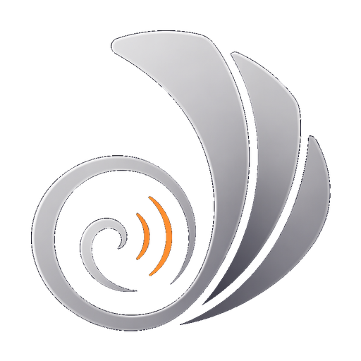

Speak Freely. Stay Private.
近乎耳语地说话,软件实时转写、再用你自己的声音以正常音量复述,送进会议软件当麦克风。开放式办公室、家里、深夜,都能安静开会与输入。
近耳语说话,输出正常音量的你本人声音。
通过虚拟声卡接入 腾讯会议 / 飞书 / Zoom。
说话即出字,支持中英混说。
口水话自动整理成清晰文字与要点。
记录并整理会议内容。
改一次就记住,下次自动纠正。
| 平台 | 状态 | |
|---|---|---|
| macOS（Apple Silicon） | 已签名 + 公证 | 下载 |
| Windows | 内测版 | 下载 |
安装与会议声音路由设置,见 文档。